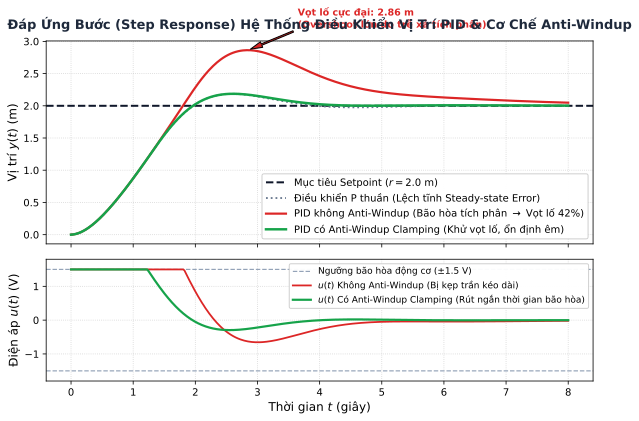

6.1 Bản chất Vòng hở (Open-Loop) vs Vòng kín (Closed-Loop)
Điều khiển vòng hở phát lệnh dựa trên kỳ vọng lý thuyết mà không kiểm tra kết quả thực tế. Ngược lại, điều khiển vòng kín liên tục đo đạc đại lượng ngõ ra $y(t)$, so sánh với giá trị đặt mong muốn $r(t)$ để tính sai lệch $e(t) = r(t) - y(t)$, từ đó tự động hiệu chỉnh tín hiệu điều khiển.
6.5 Hiện tượng Bão hòa Tích phân (Integral Windup) & Thuật toán Kẹp (Clamping)
Trong thực tế, cơ cấu chấp hành luôn có giới hạn vật lý nghiêm ngặt (như điện áp cực đại $12\text{V}$, độ rộng xung PWM cực đại $100\%$, hay dòng điện tối đa). Khi robot gặp tải lớn hoặc sai số ban đầu quá cao, tín hiệu $u(t)$ vượt ngưỡng bão hòa $u_{max}$.
Nếu khâu tích phân tiếp tục cộng dồn, biến tích lũy sẽ "phình to" tới mức khổng lồ (Windup). Khi robot đã đạt mục tiêu ($e(t) = 0$), động cơ vẫn bị duy trì ở công suất tối đa trong thời gian dài do khâu tích phân cần nhiều thời gian để "xả" hết năng lượng tích lũy, gây hiện tượng Vọt lố khổng lồ (Catastrophic Overshoot) và mất ổn định hệ thống.

Thuật toán Kẹp Chống Bão hòa Tích phân (Anti-Windup Clamping):
Ta chỉ cho phép tích lũy tích phân khi và chỉ khi:
$$\text{Cho phép tích phân} = \text{NOT} \Big( (u_{unsat} \ge u_{max} \text{ AND } e(t) \gt 0) \text{ OR } (u_{unsat} \le u_{min} \text{ AND } e(t) \lt 0) \Big)$$
6.6 Phương pháp Chỉnh định Thực nghiệm Ziegler-Nichols
Khi hàm truyền của động cơ robot chưa biết trước, phương pháp thực nghiệm dao động tới hạn Ziegler-Nichols cho phép tìm nhanh các tham số:
- Đặt $K_i = 0, K_d = 0$, tăng dần $K_p$ tới giá trị $K_u$ (Ultimate Gain) sao cho hệ thống bắt đầu dao động điều hòa tự kích với chu kỳ không đổi $T_u$.
- Tra bảng thông số tối ưu Ziegler-Nichols kinh điển:
| Loại Bộ Điều Khiển | $K_p$ | $T_i$ ($K_i = K_p / T_i$) | $T_d$ ($K_d = K_p \cdot T_d$) |
|---|---|---|---|
| Bộ điều khiển P | $0.5 \cdot K_u$ | — | — |
| Bộ điều khiển PI | $0.45 \cdot K_u$ | $T_u / 1.2$ | — |
| Bộ điều khiển PID Chuẩn | $0.60 \cdot K_u$ | $T_u / 2.0$ | $T_u / 8.0$ |
🔢 TÍNH TOÁN RỜI RẠC PID VÀ HIỆU QUẢ CỦA ANTI-WINDUP CLAMPING
Bài toán: Động cơ vị trí có giá trị đặt $r = 100\text{ rad}$. Bộ điều khiển có thông số $K_p = 2.0, K_i = 1.0\text{ s}^{-1}, K_d = 0.5\text{ s}$, chu kỳ lấy mẫu $T_s = 0.1\text{ s}$, giới hạn điện áp cực đại $u_{max} = 12\text{ V}$. Ở bước $k=0$, vị trí $y_0 = 0$, tổng tích phân $I_0 = 0$. Ở bước $k=1$, vị trí tăng lên $y_1 = 40\text{ rad}$. Hãy tính tín hiệu điều khiển $u_0$ và $u_1$ trong 2 trường hợp: (a) Không có Anti-Windup và (b) Có Anti-Windup Clamping.
Sai số: $e_0 = 100 - 0 = 100\text{ rad}$.
$u_{P0} = 2.0 \times 100 = 200\text{ V}$.
Tín hiệu chưa bão hòa: $u_0 = 200\text{ V} \gt 12\text{ V} \Rightarrow$ Bộ điều khiển bão hòa tại $u_{sat} = 12\text{ V}$.
Trường hợp (a) Không Anti-Windup:
$I_1 = I_0 + K_i \cdot e_0 \cdot T_s = 0 + 1.0 \times 100 \times 0.1 = 10.0\text{ V}$.
Trường hợp (b) Có Anti-Windup Clamping:
Vì $u$ bão hòa cực đại VÀ $e_0 \gt 0$, khâu kẹp đóng khóa! $\Rightarrow I_1 = 0.0\text{ V}$.
Sai số: $e_1 = 100 - 40 = 60\text{ rad}$.
Khâu tỉ lệ: $u_{P1} = 2.0 \times 60 = 120\text{ V}$.
Khâu vi phân: $u_{D1} = 0.5 \times \frac{60 - 100}{0.1} = 0.5 \times (-400) = -200\text{ V}$.
Tổng $u_{PD} = 120 - 200 = -80\text{ V}$.
Trường hợp (a): $u_1 = -80 + 10 = -70\text{ V}$ (vẫn bão hòa âm do tích phân kéo sai hướng).
Trường hợp (b): Nhờ kẹp, $I$ sạch hoàn toàn, robot kịp thời hãm tốc chính xác ngay trước đích đến mà không bị vọt lố!
📌 KẾT LUẬN & ĐÁNH GIÁ KỸ THUẬT
Cơ chế chống bão hòa tích phân (Anti-Windup Clamping) giữ vai trò then chốt trong bộ điều khiển PID: Ngăn chặn hiện tượng tích lũy quá mức của khâu I khi tín hiệu điều khiển chạm ngưỡng bão hòa PWM, giúp hệ thống hồi phục tốc độ mượt mà.
🛠️ CẦU NỐI KIẾN TRÚC ROS 2
Thư viện chuẩn control_toolbox::Pid trong ROS 2 cung cấp sẵn hàm setGains(p, i, d, i_max, i_min, antiwindup). Khi tham số antiwindup: true được kích hoạt trong tệp cấu hình YAML, thuật toán tích phân kẹp tự động bảo vệ hệ thống truyền động khỏi các xung bão hòa dòng điện nguy hiểm.